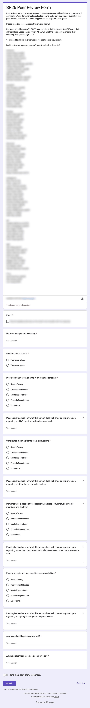
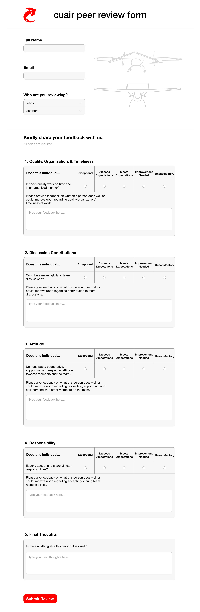

Cornell Unmanned Air Systems
Peer Review Platform Redesign
Redesigning our team's end of semester peer review platform in Figma, based on feedback I gathered from team members.
- Role
- Leading the redesign
- Timeline
- Aug 2026 to present
- Tools
- Figma
- Status
- In progress
Before
The current Google Form (names blurred for privacy)

After
My redesign in Figma

Scroll inside each box to see the full form
The problem
At the end of each semester, CUAir members reflect on how their peers have performed. The current platform for this is what I set out to improve.
TODO: What was frustrating or slow about the old platform?
Research
Before designing anything, I gathered feedback from team members on the current platform.
TODO: How did you collect feedback (survey, interviews)? How many people? List the top 2 or 3 things you heard.
Design process
TODO: Walk through how your design evolved: early sketches or wireframes, what you changed and why.
(assets/peer-review-wireframes.png)
Outcome
TODO: What does the new design do better? If it's still in progress, say what's next (testing with members, handing off to software).
Next project
Social Media Graphics